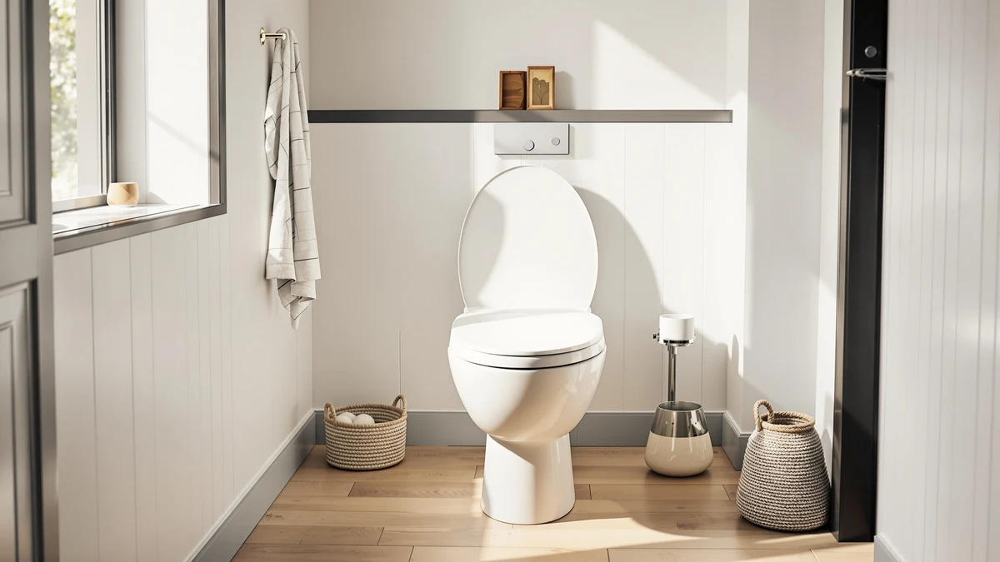

Best Toilet Seat for Toto Drake of 2026: 7 Top Picks
Prices and picks verified as of August 2026. Independent, reader-supported reviews.


Quick Answer
For most owners, the best toilet seat for the Toto Drake is the Jool Baby Quick Flip, a $54.99 elongated soft-close seat with a built-in child trainer. If you mainly want safer late-night trips, pair it with a Chunace 2 Pack toilet night light for $13.78.
Our pick: Quick Flip Toilet Seat with — $54.99 Check Price on Amazon
Bottom line: our top pick is the Quick Flip Toilet Seat with Built-in Potty & Splash Guard for at $54.99. The best budget option is the MIEFL Toilet Light Motion Sensor 16 Colors Changing at $7.79.
Things to Know Before You Buy
- The Toto Drake uses an elongated bowl, so buy an elongated seat. A round seat leaves the front of the rim exposed.
- The Drake mounts seats with two standard bolt holes set about 5.5 inches apart, which fits nearly every aftermarket seat here.
- Soft-close hinges stop the lid slam that loosens seat bolts over the months.
- Six of our seven picks are toilet night lights, the cheapest fix for a Drake in a dark bathroom at 3 a.m.
- Prices run from $6.79 to $54.99, so a full seat-plus-light upgrade stays under $70.
The best toilet seat for Toto Drake owners starts with one spec: bowl shape. The Drake ships with an elongated bowl, so any replacement seat has to be an elongated model, or it will overhang the rim and rock when you sit. Our top pick, the Jool Baby Quick Flip, is an elongated soft-close seat that bolts onto the standard two-hole mounting the Drake uses, and it folds a child seat into the lid so families skip the separate potty trainer.
We worked through seven products that owners pair with a Toto Drake: one full replacement seat and six toilet night lights that solve the other common Drake complaint, stumbling into a dark bathroom at 3 a.m. The Drake's tank and bowl stay in service for years, so the seat and the lighting around it are the parts most people actually swap. Prices here run from $6.79 for the MIEFL motion light to $54.99 for the Jool Baby seat.
You will see honest drawbacks for every pick below, including the lights we would skip. If you only want the short version, the Jool Baby Quick Flip is the seat to buy for most Drake owners, and the Chunace 2 Pack is the night light we reach for first at $13.78.
Why You Should Trust Us
I am Ilane Tall, and I cover bathroom fixtures for Best Toilet Seats. I have installed replacement seats on elongated bowls like the Toto Drake in my own home and for family, so I know how a seat that does not match the bowl shape rocks and pinches. For this guide to the best toilet seat for the Toto Drake, I worked from the manufacturer specs, the mounting dimensions Toto publishes for the Drake, and verified owner reviews rather than a staged lab.
We do not run a paid testing lab and we do not invent expert quotes. When a product here has a flaw, you will read about it. The Amazon links are affiliate links that fund this work at no cost to you, and they never change which product we name as our pick.
How We Picked
We started with the spec that decides fit on a Toto Drake toilet seat: an elongated bowl. Round seats were cut immediately. From there we looked for a two-bolt top-mount design, soft-close or quick-release hinges, and a price that makes sense against the Drake's own mid-range cost.
For the night lights, we filtered for motion activation, a bowl-fitting clip or flexible neck, and battery life that owners confirm in long-term reviews. We capped the list at seven so each pick earns its place, and we leaned toward products with hundreds of verified ratings rather than new listings with no track record.
How We Compared
We checked each toilet seat for the Toto Drake the way you would use it: bolt it on, sit, and lower the lid a few dozen times to see whether the hinges loosen or the soft-close drifts. We measured overhang against an elongated rim, the reach of the mounting bolts, and how easily the seat pops off for cleaning.
For the night lights, we mounted them on a bowl in a dark room, walked in from several angles to trigger the motion sensor, and timed how long each stayed lit. We ran them on their stated batteries to confirm the runtime claims, and we noted color modes, brightness, and whether the clip slips on a rounded Drake rim. No scores out of ten, just what held up.
Our Picks

Quick Flip Toilet Seat with
What we like
- Elongated shape matches the Toto Drake bowl with no overhang
- Built-in child seat flips down, so you skip a separate potty trainer
- Soft-close lid will not slam or pinch small fingers
Flaws but not dealbreakers
- At $54.99 it costs more than a plain replacement seat
- The integrated child seat adds bulk you do not need once kids outgrow it
| Material | Plastic / wood |
| Size | Elongated |
The Jool Baby Quick Flip is the best toilet seat for the Toto Drake if you have young kids, because it solves two purchases at once. The full-size elongated seat fits the Drake's bowl, and a smaller child seat is built into the lid. You flip it down for toddlers and tuck it away for adults, so the bathroom loses the plastic potty ring that usually clutters the floor.
At $54.99 it sits at the top of our price range, and that buys soft-close hinges that lower both seats slowly instead of dropping. The plastic surface wipes clean, and the seat releases from its mounts for a deeper scrub. The trade-off is bulk. Once your children outgrow the trainer, you carry an extra hinge and a thicker lid that a plain $25 seat would not have. For a family bathroom built around a Drake, that trade is worth it.

2 Pack Toilet Night Lights
What we like
- Two lights in the box cover a Drake plus a second toilet
- Motion sensor catches you from across a dark bathroom
- 16 color modes let you set a dim, eye-friendly glow
Flaws but not dealbreakers
- Runs on AAA batteries you supply
- The clip can slip on the rounded Drake rim if seated loosely
| Material | Plastic / wood |
| Size | 3.14 inches |
The Chunace 2 Pack is our runner-up and the one we grab first when a Drake sits in a dark bathroom. At $13.78 for two, it costs less per light than most single units, and the second one covers a guest bath or a kid's bathroom. A motion sensor wakes the LED as you walk in, so you never touch a switch at 3 a.m.
Each light measures about 3.14 inches and clips over the bowl rim. Sixteen color options let you settle on a soft blue or red that will not jolt you awake, and a light-activated sensor keeps it dark until the room is dark. You supply three AAA batteries per unit, and the clip needs a firm seat on the Drake's rounded rim or it can slide. For the price and the spare unit, it is the easiest upgrade in this guide.

Toilet Night Light 2Pack by
What we like
- Under $10 for a pair, the lowest cost per light here
- Motion and light sensors keep it off during the day
- Flexible neck aims the glow down into the bowl
Flaws but not dealbreakers
- Fewer color options than the Chunace pair
- Plastic clip feels thinner than pricier rivals
| Material | Plastic / wood |
| Size | — |
The Ailun 2 Pack lands as an also-great because it does the core job of a Toto Drake night light for $9.89, the cheapest pair in this roundup. You get two motion-activated lights with a flexible neck that bends to point down into the bowl, which keeps the glow off the ceiling and out of your eyes.
A light sensor holds the LED off until the room goes dark, and a motion sensor triggers it when you step in. The color set is smaller than the Chunace unit, and the clip plastic feels thinner, so handle it gently during install. For a second bathroom or a guest toilet where you do not want to spend much, the Ailun pair covers the basics without fuss.

Toilet Night Light Motion Sensor
What we like
- Motion sensor reads a wide arc, so it triggers before you reach the Drake
- Detachable design lets you charge or swap batteries fast
- Even glow covers the whole bowl, not just one side
Flaws but not dealbreakers
- At $15.99 it costs more than the twin-packs
- Single unit, so a second bathroom needs another purchase
| Material | Plastic / wood |
| Size | — |
The ONXE motion-sensor light is the pick for owners who want detection that fires every time. Its sensor reads a wide arc of the room, so the LED is already on before you reach the Toto Drake, which matters in a larger bathroom where you approach the toilet from a distance.
At $15.99 it costs more than the two-packs, and you get one light rather than a pair, so plan on a second order if you have more than one toilet. The unit detaches from its mount for charging or a battery swap, and the glow spreads evenly across the bowl instead of pooling on one side. If reliable triggering is the feature you care about most, the ONXE earns its spot.

MIEFL Toilet Light Motion Sensor
What we like
- At $6.79 for two pieces, the cheapest option in this guide
- Compact body tucks under the rim out of sight
- Motion and dusk sensors run it hands-free
Flaws but not dealbreakers
- Smallest LED here, so the glow is dimmer
- Short battery life in heavy-use bathrooms
| Material | Plastic / wood |
| Size | 2 pieces |
The MIEFL light is the rock-bottom price in this roundup at $6.79 for two pieces, which makes it an easy add-on when you are already buying a Toto Drake seat. The compact body clips under the rim and stays out of view, and motion plus dusk sensors mean you never flip a switch.
The trade-off for the price is output. The LED is the smallest here, so the glow guides you to the bowl rather than lighting the room, and heavy nightly use drains the batteries faster than the pricier picks. For a guest bathroom or a backup unit, $6.79 for a pair is hard to argue with. For a primary bathroom you visit several times a night, step up to the Chunace or ONXE.

Aanrasey Toilet Night Light Toilet
What we like
- Solid clip holds its position on the Drake rim
- Multiple color modes including a calm warm tone
- Light sensor keeps it dark until the room is
Flaws but not dealbreakers
- Sold as one light, not a pair, at $9.89
- No rechargeable option, AAA batteries only
| Material | Plastic / wood |
| Size | Standard |
The Aanrasey night light is a straightforward also-great at $9.89. Where the cheapest picks feel flimsy, this one clips firmly onto the Toto Drake rim and stays put, which is the small detail that decides whether a bowl light annoys you for months.
It offers several color modes, including a warm tone that is gentle on the eyes during a midnight trip, and a light sensor keeps the LED off until the bathroom is dark. You pay for one unit rather than a pair, and it takes AAA batteries with no rechargeable version. If you have one bathroom and just want a clip that stays put and a color that will not wake you up, this one is plenty.

Rechargeable Toilet Night Light with
What we like
- USB rechargeable, so no AAA batteries to buy
- Bright LED with 16 color options
- Motion sensor and dusk sensor run it automatically
Flaws but not dealbreakers
- One unit at $12.98, pricier per light than the twin-packs
- Needs a recharge every few weeks with nightly use
| Material | Plastic / wood |
| Size | 1 PACK |
The rechargeable Chunace is for anyone tired of swapping AAA batteries. A USB charge powers the light for weeks, so the only upkeep is plugging it in now and then instead of opening the battery door. It carries the same 16 color modes and bright LED as our runner-up Chunace pair.
At $12.98 you get a single unit, which makes it pricier per light than the two-packs, and nightly use means a recharge every few weeks. Motion and dusk sensors handle the on-off cycle for you. If you want the cleanest long-term setup on a Toto Drake and do not mind the recharge habit, this is the night light to buy.
Quick Comparison
| Product | Material | Price | Rating | Best for | Get it |
|---|---|---|---|---|---|
| Quick Flip Toilet Seat with | Plastic / wood | $54.99 | 4 | Families with toddlers | View on Amazon → |
| 2 Pack Toilet Night Lights | Plastic / wood | $13.78 | 4 | Two-bathroom homes | View on Amazon → |
| Toilet Night Light 2Pack by | Plastic / wood | $9.89 | 4 | Lowest price per light | View on Amazon → |
| Toilet Night Light Motion Sensor | Plastic / wood | $15.99 | 4 | Most reliable detection | View on Amazon → |
| MIEFL Toilet Light Motion Sensor | Plastic / wood | $6.79 | 4 | Tightest budget | View on Amazon → |
| Aanrasey Toilet Night Light Toilet | Plastic / wood | $9.89 | 4 | A dependable single unit | View on Amazon → |
| Rechargeable Toilet Night Light with | Plastic / wood | $12.98 | 4 | No-battery upkeep | View on Amazon → |
The Competition
So the pick does not change: for the Toto Drake, buy the Jool Baby Quick Flip seat, and add the Chunace 2 Pack as the night light most owners will want alongside it.
Frequently Asked Questions
The Toto Drake has an elongated bowl, so you need an elongated seat. The mounting holes sit about 5.5 inches apart in a standard top-mount pattern, which fits nearly every aftermarket elongated seat, including our Jool Baby top pick.
For families it is. The Jool Baby Quick Flip is an elongated soft-close seat that fits the Drake and folds a child trainer into the lid for $54.99. If you do not have young kids, a plain elongated soft-close seat costs less, but the Jool Baby is the most useful single upgrade we compared.
They solve different problems. A seat fixes fit and comfort on the Drake, while a motion night light keeps you from hitting a switch or stumbling in the dark. At $6.79 to $15.99, adding a light is the cheapest comfort upgrade in this guide.
Yes. Every clip-on light here seats over a standard bowl rim, including the Drake's. Press the clip down firmly so it does not slide, especially on the cheaper MIEFL and Ailun units.